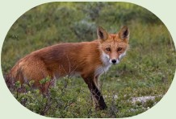
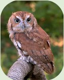
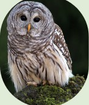
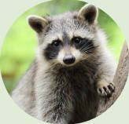
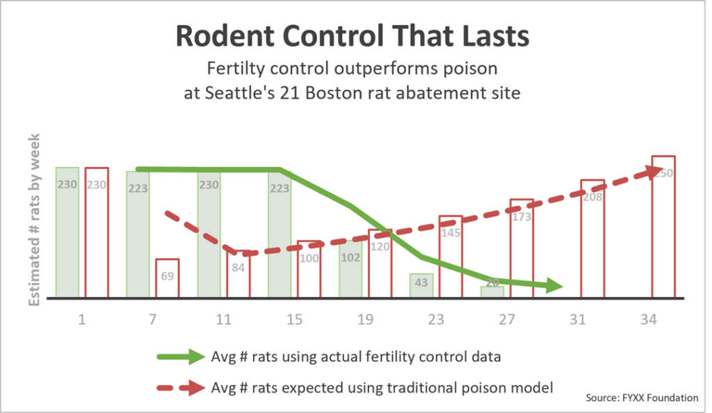
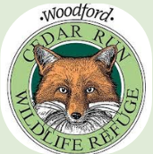
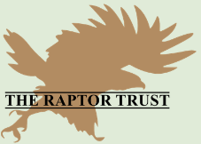

Rodenticide
in
Your
Community
Learn more
What are rodenticides?
Rodenticides are pesticides specifically formulated to kill rats. Most rodenticides are anti-coagulants, meaning they prevent blood from clotting, which causes internal bleeding. Jonathan Evans, a senior attorney and environmental health legal director at the Center for Biological Diversity, describes this kind of pesticide as “a bucket of toxic waste.” It takes about 6-12 days for a rat to die after consuming the poison, which makes the rats sluggish and easy prey while ensuring a slow and excruciating death.
Why are rodenticides not practical?
Many rat populations have developed genetic resistance to first-generation anticoagulants (like warfarin), meaning the poison no longer disrupts their blood clotting. Additionally, anticoagulants take several days to work, which means that rats will have time to breed more rats until they are killed by the poison. If a rat eats a sub-lethal dose and feels sick, it will associate the sickness with the bait and stop eating it, ultimately surviving the exposure.
Why are rodenticides bad for other animals?
This poison does not simply vanish after a poisoned rat is consumed by another animal. Rodenticide’s blood thinning transfers up the food chain each time prey that has been poisoned is consumed by a predator. As previously mentioned, rodenticides are slow killers, which means they make rats weaker and easier prey. This means that in your neighborhood screech owls, hawks, raptors, cats, dogs, foxes, and raccoons may be susceptible to rat poison if someone employs rodenticides.
Animals Affected by Rodenticide:




What happens to animals that consume poisoned rats?
Secondhand poisoning can cause lethargy, a lack of blood clotting, bruising, and lethal neurological failure. This lack of blood clotting causes them to bleed uncontrollably, both internally into their organs, and externally from the nose and mouth. The destruction of the nervous system and brain tissue causes seizures, tremors, and paralysis.
What can be done?
Animals that have consumed poisoned rats need immediate care. Vets treat these cases with decontamination (if recent) and a long-term prescription of vitamin K1 therapy, sometimes requiring blood or plasma transfusions for severe blood loss. If animals remain untreated for too long, there will be intensive internal bleeding, which can be untreatable.
What else can you do?
Below is a chart showing the research collected from an experiment testing how rat populations could be expected to react to anticoagulant poison (based on previously collected field numbers) versus how they could be expected to react to fertility control drugs. Fertility control drugs are food-flavored drugs that block reproduction abilities in both male and female rats. They do not transfer through the food chain, unlike anticoagulant rat poisons. Consider using fertility controllers like SenesTech or ContraPest, as they do not have negative effects on other animals and, as seen on the chart, control rat populations better than traditional poisons. It is also important to recognize why rats are in a certain space. Limit access to areas like sheds, and be sure to properly dispose of trash and maintain dumpsters to ensure there is a lack of an area that rats will flock to. Remember rats are in need of a habitat, and they choose specific places for specific reasons! Reduce all welcoming areas, and you are less likely to fester rats.

How can you help?
Advocate for animals!
- Tell other friends and family about the dangers of rodenticide. Many people aren’t aware of their horrifying secondary effects.
Use other methods!
- Don’t use anticoagulant rat poisons at your home or business. You’re not just killing rats; you’re killing your community of foxes, owls, and raccoons!
Help natural rat predators.
- Drive safely, minding wildlife like foxes and raccoons. They naturally take care of rats without the need for poisons! Set up nest boxes for raptors in your community. For building plans or auction information, contact Raptor Trust!
Support those who help with rodenticides!
- Animal rehabilitation centers are essential for helping wildlife in need of special help. Rodenticide affected animals need a special amount of care, which can be very expensive. Donations can be very helpful! Donate to Cedar Run or Raptor Trust today! See the contacts page for more information.


Contacts
Found a potentially rodenticide poisoned animal?
Are you near Medford, NJ?
- Contact Cedar Run, an environmental nonprofit organization dedicated to the preservation of New Jersey’s wildlife and habitats through education, conservation, and rehabilitation.
- Reach out via their hospital at 856-983-3329 ext. 107 for more species-specific advice.
Are you near Millington or Long Hill Township, NJ?
- Contact Raptor Trust, a nonprofit bird rehabilitation center that works hard to care for raptors and other birds in NJ.
- Call them at 908-647-2353 to reserve an appointment.
How can I donate?
Learn More
- Poison Free by 2023 raptorsarethesolution.org
- Rodenticide Toxicity Cornell Wildlife Health Lab
- The Internet Has a Rat Poison Problem Audubon Magazine
- Anticoagulant Rodenticide Poisoning in Animals Merck Veterinary Manual
- Urban Raptors: Rodenticides NYC Bird Alliance